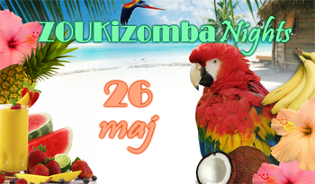
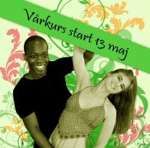

~Tropical~ ZOUKizomba Nights
– 26 maj–

På med stråhatten och hawaiiskjortan!
Vi beger oss på en resa till varmare breddgrader för karibiskt gung
och bjuder på alkoholfria drinkar samt exotiska frukter.
Brazouka bjuder upp till dansgolv med zouk lambada och kizomba,
två danser till samma musik. Testa nya steg eller njut av din favoritdans,
alla är välkomna att inspirera och inspireras!
Vi inleder med en kortare workshop – lär dig grunderna i zouk lambada
eller värm upp inför danskvällen.
Vi spelar de senaste låtarna från världens dansgolv.
Tid: 19.00 - 22.00
Workshop: 19.00 - 19.30
Adress: SMAC, Åsögatan 153
Entré: 70 kr inkl. workshop, 50 kr endast fest (efter kl. 19.30)
Kom tidigt då lokalen tar begränsat antal personer!
Glöm inte ombytesskor, inga ytterskor i salen.
Eventet på Facebook: http://www.facebook.com/events/309567459122944/
Vårkurs 13 maj - 3 juni

Vi arrangerar en fortsättningskurs på fyra veckor för nuvarande och tidigare elever,
samt nya elever med dansvana. Kursen är en påbyggnad där vi går vidare i teknik, hållning,
turer och styling, allt för att utvecklas och släppa loss ännu mer på dansgolvet.
Du ska kunna grunderna i zouk lambada, eller ha lätt
att lära så att du hänger med på en snabb nivå.
Ett minimiantal krävs för att kursen ska bli av, därför behöver
vi din anmälan per mail senast 6 maj till info@brazouka.com.
Datum: 13 maj - 3 juni
Tid: Söndagar 16.30 - 17.30 (obs, ny tid!)
Pris: 450 kr
Intensivkurs 16-17 juni
Vi planerar en intensivkurs som kommer att hållas under en helg i juni.
Kursen riktar sig till danserfarna som på ett effektivt och intensivt sätt vill lära sig zouk lambada.
Tidigare elever som vill bättra på grunderna och träna på tekniken är också välkomna.
Datum: 16-17 juni
Tid: 14.00-17.15 inkl. paus
Total lektionstid: 6 timmar
Pris: 650 kr
Anmälan sker via mail till info@brazouka.com och bekräftas med inbetalning på bankgiro 825-5622.
Märk inbetalningen med ditt namn och "intensivkurs".
Brazoukas klädkollektion
våren 2012
Nu finns det Brazoukatröjor till försäljning,
t-shirts för herrar och linnen för damer.
Killmodellen finns i svart och vitt, storlek M och L.
Damlinnet är one size i stretchigt tyg och finns i rött, svart och vitt.
Bilder på samtliga modeller finner ni i vårt
Facebookalbum (inloggning på Facebook krävs).
Begränsad upplaga – slå till medan du kan!
Pris: 150 kr
Beställning görs via mail till info@brazouka.com.